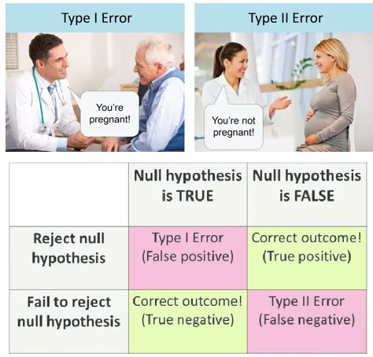

4 Proportions
4.1 Confidence intrval
Task:
We take a sample of 1,000 voters.
45% of our respondents say they will vote for trump.
Provide an interval with 95% of containing the true proportion \(p\)
Solution:
Our proportion \(\hat{p}\) follows a normal distribution with mean \(p\) and standard deviation \(\sqrt{p(1-p)/N} \approx \sqrt{0.45\times 0.55/1000} \approx 0.016\)
Lets consider symmetric intervals with: \([\hat{p} - B, \hat{p} + B]\)
We want to find a margin of error \(\text{MOE}\) such that:
\[ \text{P}(p \in [\hat{p} - \text{MOE}, \hat{p} + \text{MOE}]) = 0.95 \]
We accomplish it by setting \(\text{MOE} = 2 \sigma_{\hat{p}} \approx \sqrt{\hat{p}(1-\hat{p})}/\sqrt{N} \approx 0.03\)
\[ \begin{aligned} \text{P}(p \in [\hat{p} - 2 \sigma_{\hat{p}}, \hat{p} + 2 \sigma_{\hat{p}}]) &= \text{P}(\hat{p} - 2 \sigma_{\hat{p}} < p < \hat{p} + 2 \sigma_{\hat{p}}]) \\ &= \text{P}(- 2 \sigma_{\hat{p}} < \hat{p} - p < 2 \sigma_{\hat{p}}])\\ &= \text{P}\left(- 2 < \frac{\hat{p} - p}{\sigma_{\hat{p}}} < 2\right)\\ &= \text{P}(-2 < Z < 2)\\ &=0.95 \end{aligned} \]
So our interval is \(0.45 \pm 0.03\).
If we want to be 99.7% sure we can use 3 instead of 2.
If we want to be 68% sure we can use 1 instead of 2.
We refer to the 0.03 as the margin of error (MOE).
4.2 Critical values
We already knew that using \(2\) would give us a 95% confidence interval.
But what if we didn’t know? Or if we wanted a 99% confidence interval?
The function invNorm will do this for us. The impute is the area to the left.
So to obtain 95% we need 0.5% to the left and 0..5% to the right.
We use invNorm(0.995) which gives us r qnorm(0.995)
So we multiply by \(2.57\) not \(2\) to get a 99% confidence interval.
Note that to get exactly 95% we actually use invNorm(0.975) which is r qnorm(0.975), a little bit less than 2. In some books you will see 1.96 instead of 2.
4.3 p-values
We want to know if a coin in biased.
We toss it 100 times and observe 60% heads.
Is it biased or can this happen by chance?
Let’s compute the probability of seeing \(\hat{p} = 0.6\) or more extreme.
Note that 0.4 is as extreme: we usually permit both directions.
Null hypothesis: It is fair or \(p=0.5\)
We will reject if the p-value is 0.05 or smaller.
The p-value is the probability observing something as extreme as we did when the null hypothesis holds
\[ \begin{aligned} \text{P}(|\hat{p} - p| \geq 0.1) &= 1 - \text{P}(|\hat{p} - p| < 0.1)\\ &=1 - \text{P}\left(\left|\frac{\hat{p}-p}{\sigma_{\hat{p}}}\right| < \frac{0.1}{\sigma_{\hat{p}}}\right)\\ &=1 - \text{P}\left(|Z| < \frac{0.1}{\sigma_{\hat{p}}}\right) \end{aligned} \]
When the null hypothesis holds, \(\sigma_{\hat{p}} = \sqrt{0.5\times 0.5 / 100} = 0.05\)
So the p-value is \(1 - \text{P}(|Z| < 0.1/0.05 = 2)\) which is a bit less than 0.05
We reject the null hypothesis.
To help remember:

4.4 Difference of two proportion
4.4.1 Confidence interval
Does drug work better than placebo?
The proportion of the populations are \(p_1\) and \(p_2\).
For both placebo and drugged populations we obtain sample means \(\hat{p}_1\) and \(\hat{p}_2\)
The sample sizes are \(N_1\) and \(N_2\)
Provide a 95% confidence interval
We know the difference \(\hat{p}_1 - \hat{p}_2\) had the following mean and SD:
- \(\mu_{\hat{p}_1 - \hat{p}_2} = p_1 - p_2\)
- \(\sigma_{\hat{p}_1 - \hat{p}_2} = \sqrt{ \frac{p_1(1-p_1)}{N_1} + \frac{p_2(1-p_2)}{N_2}}\)
To construct a 95% confidence interval we use \(\hat{p}_1 - \hat{p}_2 \pm \sigma_{\hat{p}_1 - \hat{p}_2}\)
As before we estimate
\[ \sigma_{\hat{p}_1 - \hat{p}_2} = \sqrt{ \frac{\hat{p}_1(1-\hat{p}_1)}{N_1} + \frac{\hat{p}_2(1-\hat{p}_2)}{N_2}} \]
4.4.2 p-value
Suppose we have sample sizes of 25 and 100 for the the drug and placebo group respectively and
we observe \(\hat{p}_1 = 0.25\) and \(\hat{p}_2 = 0.15\)
The null is that there is no difference so \(p_1 - p_2\) or \(p_1 = p_2 = p\)
Under the null hypothesis we have
\(\mu_{\hat{p}_1 - \hat{p}_2} = 0\)
\(\sigma_{\hat{p}_1 - \hat{p}_2} = \sqrt{ \frac{p(1-p)}{N_1} + \frac{p(1-p)}{N_2}}\)
To compute the p-value we need an estimate for \(\sigma_{\hat{p}_1 - \hat{p}_2}\) which depends on \(p\)
We estimate \(p\) with pooled data:
\[\frac{N_1\hat{p}_1 + N_2\hat{p}_2}{N_1+N_2} = 0.17\]
which means \(\sigma_{\hat{p}_1 - \hat{p}_2} \approx \sqrt{(0.17\times 0.83)(1/25+1/100)} \approx 0.08\)
With this we can compute
\[ \begin{aligned} \text{P}(|\hat{p}_1 - \hat{p}_2| \geq 0.1) &= 1 - \text{P}(|Z| < 0.1/\sigma_{\hat{p}_1 - \hat{p}_2})\\ &= 1 - \text{P}(|Z| < 0.1/0.08) \\ &\approx 0.20 \end{aligned} \]
We do not reject.
4.4.3 Confidence interval and p-value connection
You can do the math and see that if a 95% confidence interval does not include the null hypothesis mean, then a p-value will be less than 0.05
The math:
If the null hypothesis says the mean is \(p\) and the observed \(\hat{p}\) resulted in a p-value less than 0.05, we know:
\[ \left| \frac{\hat{p} - p}{\sigma_{\hat{p}}} \right| > 2 \] This implies that either
\[ p > \hat{p} + 2\sigma_{\hat{p}} \text{ or } p < \hat{p} - 2\sigma_{\hat{p}} \]